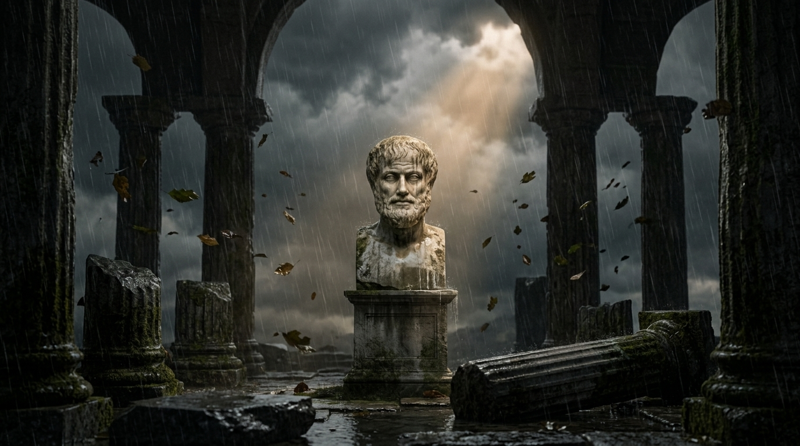

الرواقية: قوة الهدوء الداخلي وصناعة السكينة الباطنية
كيف يصنع التماسك الذهني قوة فاعلة تتجاوز ردود الأفعال العشوائية وتثبّت القلعة الباطنية.
✍️ Hikma & Nour
⏱️ 11 min read
📜 Document V4

الصمود الرواقي: وجه رخامي صامت وسط عاصفة المطر والرياح، يرمز للهدوء الثابت المضاء بشعاع نوري.